本網站其他頁面只用臺灣資料，呈現的是臺灣周邊、臺灣漁船所能捕到的那一部分資源。許多物種與鄰國共享，臺灣漁獲只占整個西北太平洋的一小部分。這一頁補上區域的視角：同一個物種，放到整個西北太平洋來看，資源狀態是否不同？
末年 Kobe 位置的變化
為什麼結果不同
- 臺灣占比決定差異大小。臺灣占區域漁獲過半的金梭魚屬、沙鮻科、鎖管、笛鯛科，兩種評估較接近；臺灣占不到一成的 22 組，區域結果主要反映中國大陸、日本、韓國的漁業。
- 區域資源量多半較高。臺灣漁獲多在 1980–90 年代達到高峰後大幅下降，CMSY++ 因此推估資源量偏低；鄰國的帶魚、小黃魚、烏賊類等漁獲到 2010 年代仍維持高檔。
- 兩者描述不同的空間範圍。區域合計較樂觀，不表示臺灣周邊的局部資源沒有下降；臺灣漁獲的下降也可能部分來自漁船減少與作業轉移。
- F/Fmsy 不一定變低。鎖管、單棘魨科、鮃鰈類、臭肉鰮、日本馬加鰆在區域合計下 F/Fmsy 超過 1；長足龍蝦兩種評估都超過 2。
- 通報斷層已補足。12 組受中國大陸較晚分種通報、或日韓中途停止分種通報影響，已以該國未分類項目按比例補足；其中 3 組改用「只取通報後年份」時分區不同，結果較不穩定。
比較總表
點欄名排序；點物種名看細節| 物種 | 臺灣占比 2015–24 | B/Bmsy 臺→區 | F/Fmsy 臺→區 | Kobe 臺→區 | MSY t（臺灣） | MSY t（區域） |
|---|---|---|---|---|---|---|
| 金梭魚屬 | 100% | 0.25 → 0.26 | 1.10 → 0.97 | 紅 → 黃 | 2,474 | 2,565 |
| 沙鮻科已補足通報斷層 | 78% | 0.20 → 0.20 | 0.47 → 0.92 | 黃 → 黃 | 1,595 | 2,255 |
| 鎖管 | 72% | 0.63 → 0.42 | 0.93 → 1.25 | 黃 → 紅 | 11,188 | 18,873 |
| 笛鯛科 | 54% | 0.20 → 0.19 | 0.57 → 0.84 | 黃 → 黃 | 7,283 | 8,584 |
| 扁花鰹 | 29% | 0.25 → 1.54 | 1.73 → 0.42 | 紅 → 綠 | 3,246 | 28,473 |
| 圓花鰹 | 29% | 0.85 → 1.54 | 1.25 → 0.42 | 紅 → 綠 | 6,117 | 28,473 |
| 藍圓鰺 | 24% | 0.27 → 0.33 | 1.09 → 1.18 | 紅 → 紅 | 6,963 | 72,355 |
| 羊魚屬（秋姑） | 19% | 0.19 → 0.20 | 0.28 → 0.57 | 黃 → 黃 | 5,444 | 6,920 |
| 日本對蝦 | 17% | 0.20 → 0.20 | 0.34 → 0.58 | 黃 → 黃 | 2,978 | 8,290 |
| 刺鯧已補足通報斷層 | 10% | 0.25 → 0.37 | 1.06 → 1.20 | 紅 → 紅 | 2,700 | 11,978 |
| 花腹鯖 | 6% | 0.73 → 0.73 | 1.00 → 0.95 | 紅 → 黃 | 61,808 | 1,275,449 |
| 真鰺 | 6% | 0.66 → 0.57 | 1.21 → 0.94 | 紅 → 黃 | 12,814 | 302,244 |
| 合齒魚科已補足通報斷層 | 4% | 0.20 → 0.30 | 0.51 → 0.91 | 黃 → 黃 | 5,724 | 42,571 |
| 飛魚科已補足通報斷層 | 3% | 0.22 → 0.61 | 0.99 → 0.70 | 黃 → 黃 | 3,560 | 14,233 |
| 長足龍蝦 | 1% | 0.25 → 0.63 | 2.22 → 2.39 | 紅 → 紅 | 129 | 1,866 |
| 鯔已補足通報斷層 | 1% | 0.29 → 0.84 | 1.80 → 0.90 | 紅 → 黃 | 2,683 | 101,970 |
| 帶魚屬 | 1% | 0.60 → 1.02 | 1.93 → 0.88 | 紅 → 綠 | 10,406 | 1,138,782 |
| 真鯛 | 1% | 0.20 → 0.72 | 0.52 → 1.00 | 黃 → 黃 | 2,389 | 21,756 |
| 白姑魚已補足通報斷層 | 1% | 0.24 → 1.15 | 1.02 → 0.72 | 紅 → 綠 | 4,529 | 118,387 |
| 遠海梭子蟹已補足通報斷層 | 1% | 0.20 → 1.06 | 0.25 → 0.83 | 黃 → 綠 | 4,619 | 82,417 |
| 日本馬加鰆 | 1% | 0.57 → 0.86 | 0.86 → 1.24 | 黃 → 紅 | 525 | 49,262 |
| 臭肉鰮 | <1% | 0.19 → 0.92 | 0.05 → 1.14 | 黃 → 紅 | 11,852 | 74,758 |
| 烏賊、耳烏賊類 | <1% | 0.19 → 1.21 | 0.33 → 0.62 | 黃 → 綠 | 21,280 | 194,236 |
| 鮃鰈類 | <1% | 0.23 → 0.39 | 0.85 → 1.27 | 黃 → 紅 | 1,957 | 295,924 |
| 馬頭魚屬已補足通報斷層 | <1% | 0.22 → 0.74 | 1.00 → 1.03 | 紅 → 紅 | 849 | 57,834 |
| 灰海鰻已補足通報斷層 | <1% | 0.20 → 0.95 | 0.89 → 1.10 | 黃 → 紅 | 7,707 | 328,063 |
| 單棘魨科 | <1% | 0.19 → 0.36 | 0.64 → 1.41 | 黃 → 紅 | 1,578 | 345,607 |
| 章魚類已補足通報斷層 | <1% | 0.19 → 1.20 | 1.09 → 0.65 | 紅 → 綠 | 1,377 | 210,191 |
| 鐮鯧已補足通報斷層 | <1% | 0.19 → 1.12 | 0.49 → 0.86 | 黃 → 綠 | 3,773 | 361,351 |
| 小黃魚 | <1% | 0.18 → 0.98 | 1.19 → 0.82 | 紅 → 黃 | 2,233 | 358,578 |
| 劍蝦已補足通報斷層 | <1% | 0.26 → 0.94 | 1.07 → 0.91 | 紅 → 黃 | 907 | 298,209 |
「臺灣」指網站上只用臺灣資料的評估：年報 36 種為年報沿岸＋近海（末年 2025），FAO 序列 18 種為 FAO 臺灣序列（末年 2024）。圓花鰹與扁花鰹在 FAO 為同一項目，對照同一個區域結果。
與日本正式資源評估對照
日本水產研究・教育機構對東海至日本海的對馬暖流系群有正式評估，可作為區域結果的參照。日本的評估以親魚量（SB/SBmsy）表示，範圍只涵蓋日韓等國利用的系群，與 FAO 61 區合計並不完全相同。
| 本站物種 | 日本評估（年） | SB/SBmsy / F/Fmsy | 分區 | 臺灣 B / F | 分區 | 區域 B / F | 分區 |
|---|---|---|---|---|---|---|---|
| 真鰺 | マアジ對馬暖流系群（2025） | 0.58 / 0.65 | 黃 | 0.66 / 1.21 | 紅 | 0.57 / 0.94 | 黃 |
| 花腹鯖 | ゴマサバ（花腹鯖）對馬暖流系群（2024） | 0.61 / 1.34 | 紅 | 0.73 / 1.00 | 紅 | 0.73 / 0.95 | 黃 |
| 花腹鯖 | マサバ（白腹鯖）對馬暖流系群（2024） | 1.03 / 0.83 | 綠 | 0.73 / 1.00 | 紅 | 0.73 / 0.95 | 黃 |
真鰺：區域合計與日本評估同為黃區，B/Bmsy 也接近（0.57 vs 0.58）。花腹鯖：本站區域序列混合了白腹鯖與花腹鯖；日本對花腹鯖（ゴマサバ）的評估為紅區，與只用臺灣資料的結果較一致，對白腹鯖（マサバ）則為綠區。
各物種細節
金梭魚屬紅→黃臺灣占 100%
- FAO 項目
- Barracudas NEI
- 主要通報國（全期占比）
- 臺灣 98%、日本 2%
- 臺灣占比
- 全期 98%；2015–2024 100%
- 臺灣評估
- FAO 臺灣（含遠洋拖網），1966–2024
| 只用臺灣資料 | 西北太平洋合計 | |
|---|---|---|
| 期間 | 1966–2024 | 1966–2024 |
| B/Bmsy（95%） | 0.25（0.08–0.51） | 0.26（0.09–0.53） |
| F/Fmsy（95%） | 1.10（0.27–11.85） | 0.97（0.23–8.48） |
| Kobe | 紅 | 黃（紅 49%、黃 51%、綠 0%） |
| MSY（t） | 2,474 | 2,565 |
| SSP | 崩潰 | 崩潰 |
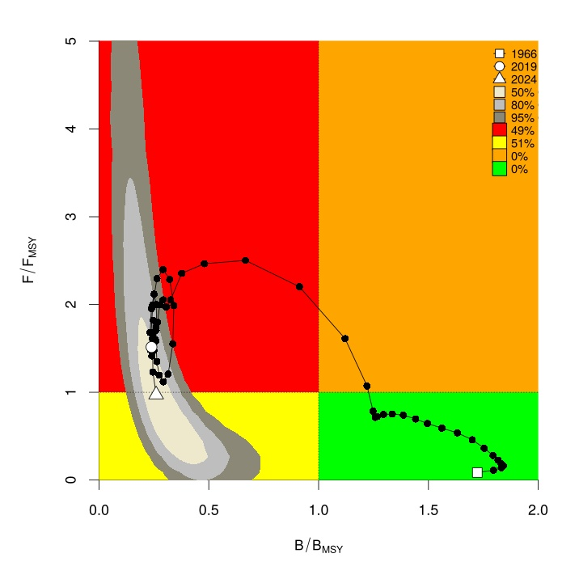
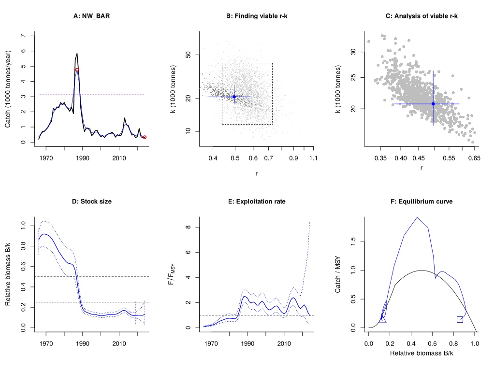
沙鮻科黃→黃臺灣占 78%
- FAO 項目
- Sillago-whitings
- 主要通報國（全期占比）
- 韓國 59%、臺灣 41%
- 臺灣占比
- 全期 40%；2015–2024 78%
- 臺灣評估
- FAO 臺灣（含遠洋拖網），1989–2024
| 只用臺灣資料 | 西北太平洋合計 | |
|---|---|---|
| 期間 | 1989–2024 | 1974–2024 |
| B/Bmsy（95%） | 0.20（0.05–0.43） | 0.20（0.07–0.45） |
| F/Fmsy（95%） | 0.47（0.09–8.31） | 0.92（0.18–7.75） |
| Kobe | 黃 | 黃（紅 47%、黃 53%、綠 0%） |
| MSY（t） | 1,595 | 2,255 |
| SSP | 崩潰 | 崩潰 |
通報斷層處理：韓國在 2010 年後停止分種通報，以其未分類項目的 0.2% 補足。
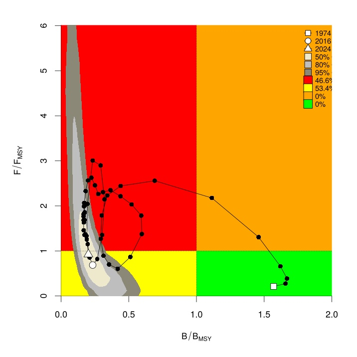
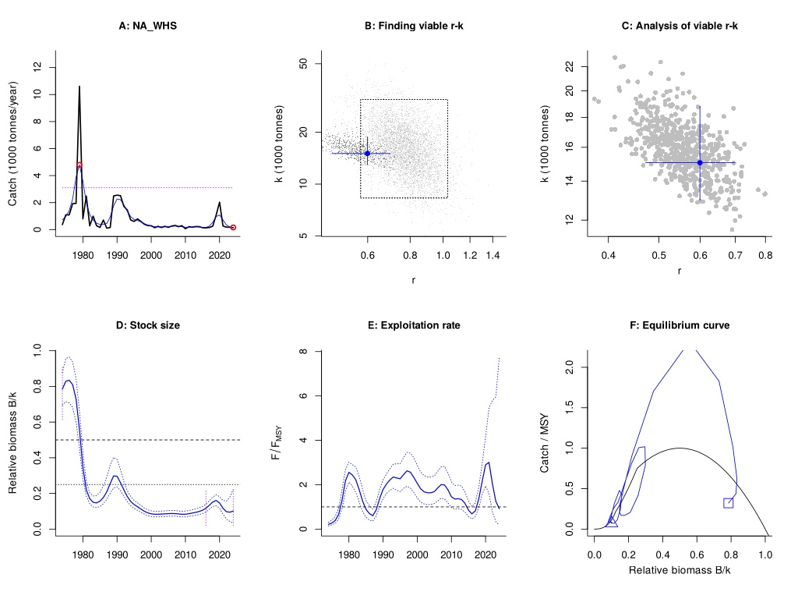
鎖管黃→紅臺灣占 72%
- FAO 項目
- Common squids NEI
- 主要通報國（全期占比）
- 臺灣 93%、韓國 7%
- 臺灣占比
- 全期 93%；2015–2024 72%
- 臺灣評估
- 年報（沿岸＋近海），1986–2025
| 只用臺灣資料 | 西北太平洋合計 | |
|---|---|---|
| 期間 | 1986–2025 | 1985–2024 |
| B/Bmsy（95%） | 0.63（0.31–1.03） | 0.42（0.20–0.78） |
| F/Fmsy（95%） | 0.93（0.52–3.26） | 1.25（0.48–5.67） |
| Kobe | 黃 | 紅（紅 63%、黃 37%、綠 0%） |
| MSY（t） | 11,188 | 18,873 |
| SSP | 復育中 | 復育中 |
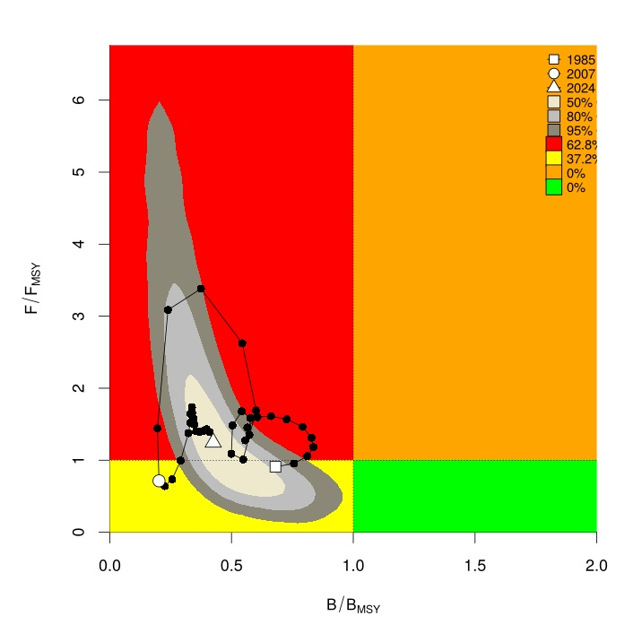
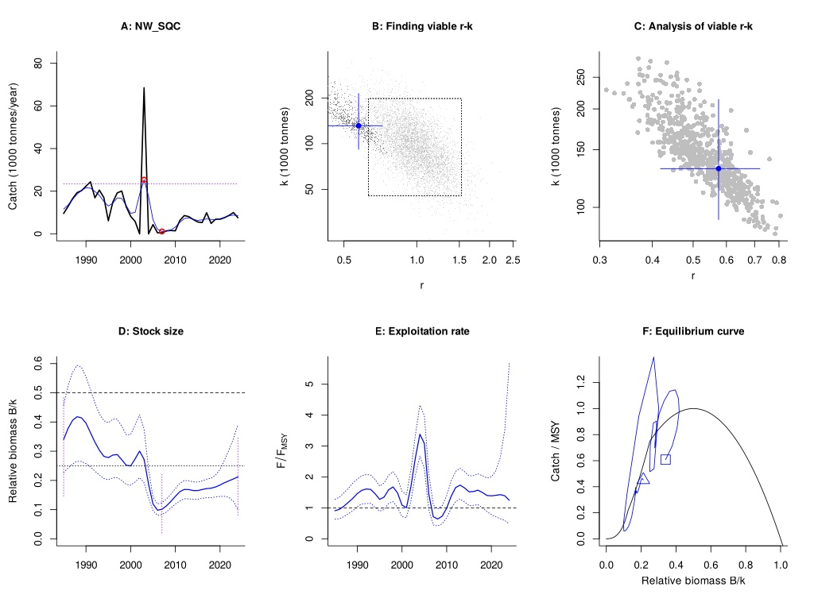
笛鯛科黃→黃臺灣占 54%
- FAO 項目
- Snappers, jobfishes NEI；Snappers NEI
- 主要通報國（全期占比）
- 臺灣 78%、香港 22%
- 臺灣占比
- 全期 78%；2015–2024 54%
- 臺灣評估
- FAO 臺灣（含遠洋拖網），1958–2024
| 只用臺灣資料 | 西北太平洋合計 | |
|---|---|---|
| 期間 | 1958–2024 | 1950–2024 |
| B/Bmsy（95%） | 0.20（0.06–0.44） | 0.19（0.06–0.43） |
| F/Fmsy（95%） | 0.57（0.11–6.56） | 0.84（0.16–9.53） |
| Kobe | 黃 | 黃（紅 43%、黃 57%、綠 0%） |
| MSY（t） | 7,283 | 8,584 |
| SSP | 崩潰 | 崩潰 |
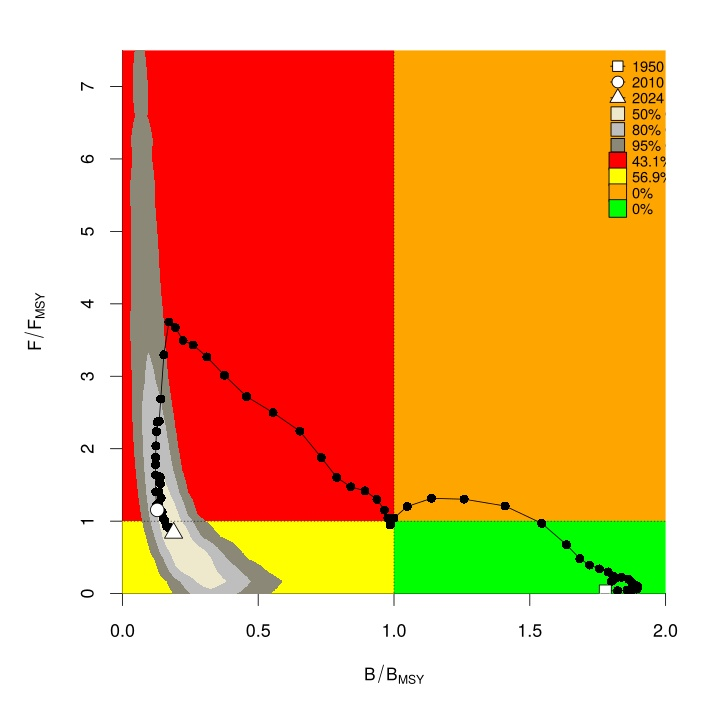
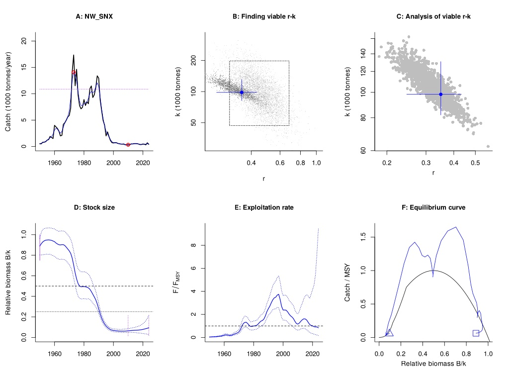
扁花鰹紅→綠臺灣占 29%
- FAO 項目
- Frigate and bullet tunas
- 主要通報國（全期占比）
- 日本 84%、臺灣 16%
- 臺灣占比
- 全期 16%；2015–2024 29%
- 臺灣評估
- 年報（沿岸＋近海），1959–2025
| 只用臺灣資料 | 西北太平洋合計 | |
|---|---|---|
| 期間 | 1959–2025 | 1950–2024 |
| B/Bmsy（95%） | 0.25（0.08–0.50） | 1.54（1.24–1.74） |
| F/Fmsy（95%） | 1.73（0.40–21.56） | 0.42（0.30–0.61） |
| Kobe | 紅 | 綠（紅 0%、黃 0%、綠 100%） |
| MSY（t） | 3,246 | 28,473 |
| SSP | 崩潰 | 完全開發 |
FAO 將圓花鰹與扁花鰹合併為一項。
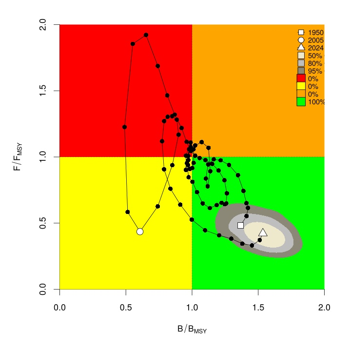
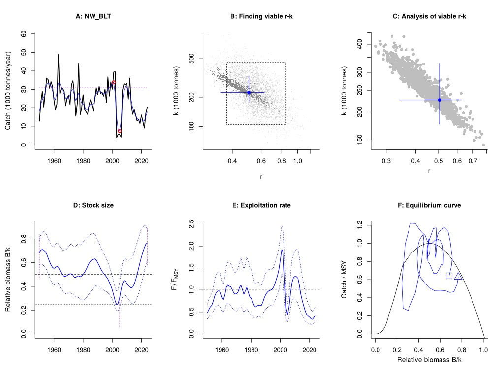
圓花鰹紅→綠臺灣占 29%
- FAO 項目
- Frigate and bullet tunas
- 主要通報國（全期占比）
- 日本 84%、臺灣 16%
- 臺灣占比
- 全期 16%；2015–2024 29%
- 臺灣評估
- 年報（沿岸＋近海），1977–2025
| 只用臺灣資料 | 西北太平洋合計 | |
|---|---|---|
| 期間 | 1977–2025 | 1950–2024 |
| B/Bmsy（95%） | 0.85（0.40–1.34） | 1.54（1.24–1.74） |
| F/Fmsy（95%） | 1.25（0.57–3.70） | 0.42（0.30–0.61） |
| Kobe | 紅 | 綠（紅 0%、黃 0%、綠 100%） |
| MSY（t） | 6,117 | 28,473 |
| SSP | 完全開發 | 完全開發 |
FAO 將圓花鰹與扁花鰹合併為一項。
藍圓鰺紅→紅臺灣占 24%
- FAO 項目
- Japanese scad
- 主要通報國（全期占比）
- 日本 94%、臺灣 6%
- 臺灣占比
- 全期 6%；2015–2024 24%
- 臺灣評估
- 年報（沿岸＋近海），1989–2025
| 只用臺灣資料 | 西北太平洋合計 | |
|---|---|---|
| 期間 | 1989–2025 | 1950–2024 |
| B/Bmsy（95%） | 0.27（0.09–0.51） | 0.33（0.14–0.61） |
| F/Fmsy（95%） | 1.09（0.29–10.18） | 1.18（0.39–6.54） |
| Kobe | 紅 | 紅（紅 59%、黃 41%、綠 0%） |
| MSY（t） | 6,963 | 72,355 |
| SSP | 崩潰 | 復育中 |
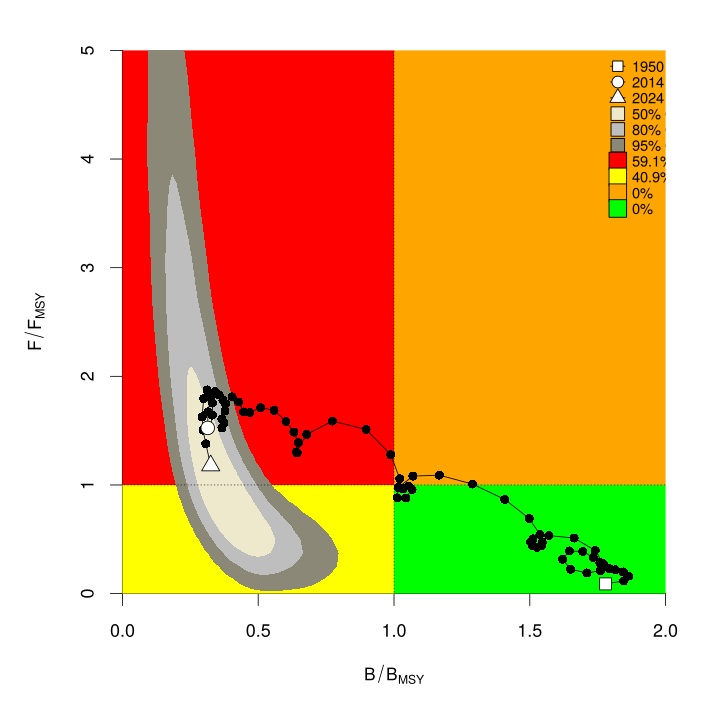
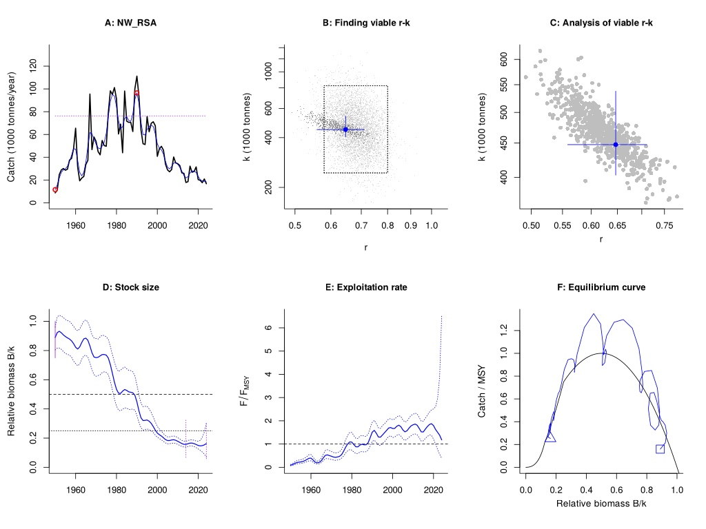
羊魚屬（秋姑）黃→黃臺灣占 19%
- FAO 項目
- Goatfishes；Goatfishes, red mullets NEI
- 主要通報國（全期占比）
- 臺灣 59%、香港 40%
- 臺灣占比
- 全期 59%；2015–2024 19%
- 臺灣評估
- FAO 臺灣（含遠洋拖網），1958–2024
| 只用臺灣資料 | 西北太平洋合計 | |
|---|---|---|
| 期間 | 1958–2024 | 1950–2024 |
| B/Bmsy（95%） | 0.19（0.07–0.44） | 0.20（0.07–0.46） |
| F/Fmsy（95%） | 0.28（0.05–2.04） | 0.57（0.11–4.80） |
| Kobe | 黃 | 黃（紅 30%、黃 70%、綠 0%） |
| MSY（t） | 5,444 | 6,920 |
| SSP | 崩潰 | 崩潰 |
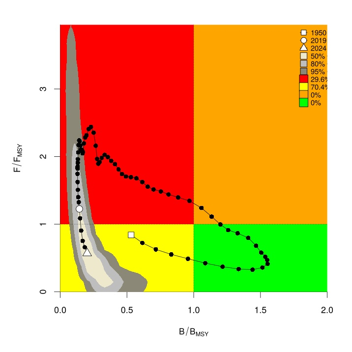
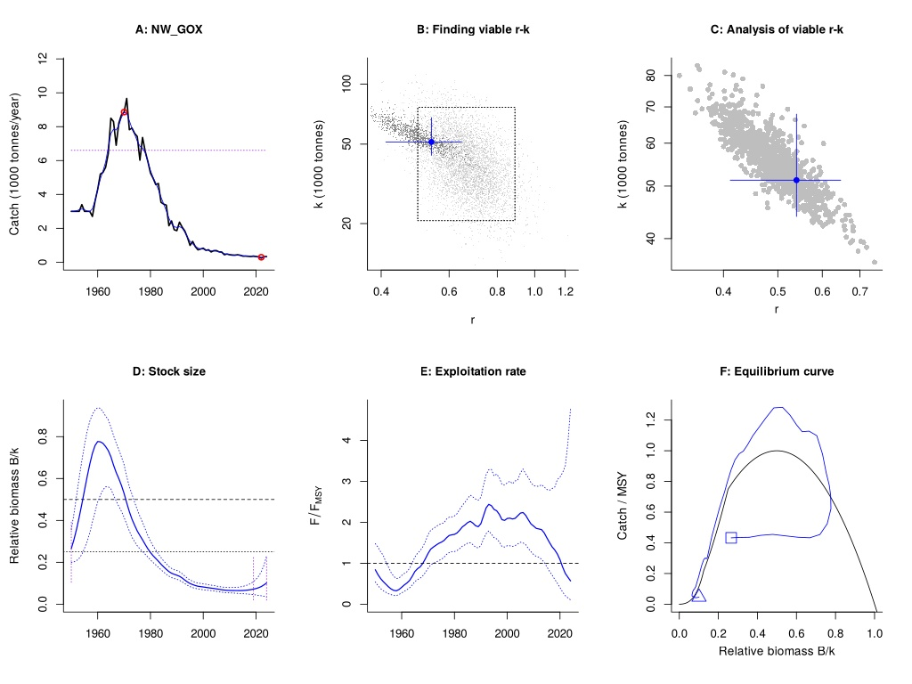
日本對蝦黃→黃臺灣占 17%
- FAO 項目
- Kuruma prawn
- 主要通報國（全期占比）
- 臺灣 42%、日本 41%、韓國 16%
- 臺灣占比
- 全期 42%；2015–2024 17%
- 臺灣評估
- 年報（沿岸＋近海），1958–2025
| 只用臺灣資料 | 西北太平洋合計 | |
|---|---|---|
| 期間 | 1958–2025 | 1950–2024 |
| B/Bmsy（95%） | 0.20（0.07–0.40） | 0.20（0.06–0.41） |
| F/Fmsy（95%） | 0.34（0.08–2.88） | 0.58（0.14–7.65） |
| Kobe | 黃 | 黃（紅 28%、黃 72%、綠 0%） |
| MSY（t） | 2,978 | 8,290 |
| SSP | 崩潰 | 崩潰 |
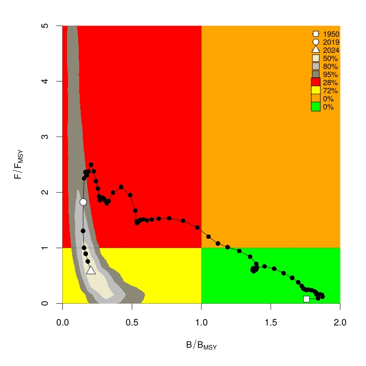
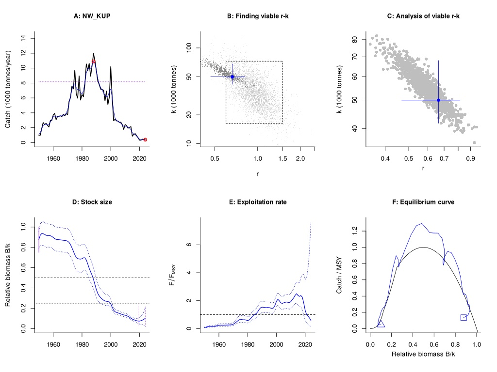
刺鯧紅→紅臺灣占 10%
- FAO 項目
- Pacific rudderfish
- 主要通報國（全期占比）
- 臺灣 44%、日本 38%、香港 18%
- 臺灣占比
- 全期 40%；2015–2024 10%
- 臺灣評估
- 年報（沿岸＋近海），1953–2025
| 只用臺灣資料 | 西北太平洋合計 | |
|---|---|---|
| 期間 | 1953–2025 | 1950–2024 |
| B/Bmsy（95%） | 0.25（0.09–0.47） | 0.37（0.18–0.68） |
| F/Fmsy（95%） | 1.06（0.30–7.99） | 1.20（0.47–5.36） |
| Kobe | 紅 | 紅（紅 60%、黃 40%、綠 0%） |
| MSY（t） | 2,700 | 11,978 |
| SSP | 崩潰 | 崩潰 |
通報斷層處理：日本在 2006 年後停止分種通報，以其未分類項目的 1.9% 補足。
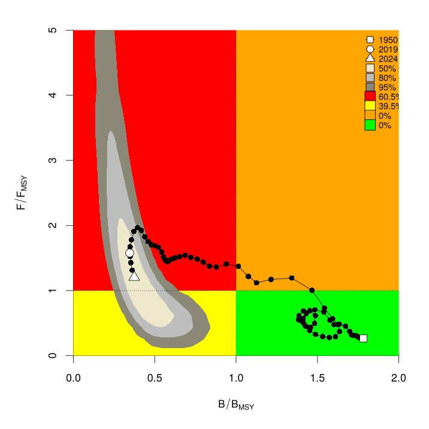
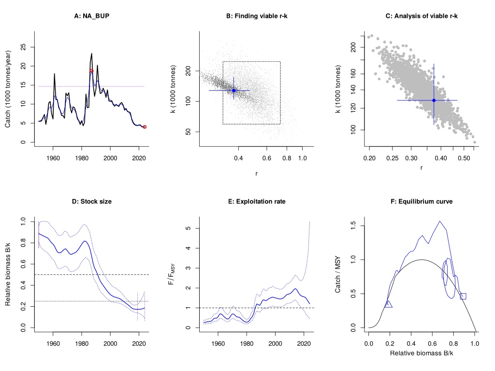
花腹鯖紅→黃臺灣占 6%
- FAO 項目
- Pacific chub mackerel；Blue mackerel
- 主要通報國（全期占比）
- 日本 59%、中國大陸 23%、韓國 9%、前蘇聯 5%
- 臺灣占比
- 全期 3%；2015–2024 6%
- 臺灣評估
- 年報（沿岸＋近海），2014–2025
| 只用臺灣資料 | 西北太平洋合計 | |
|---|---|---|
| 期間 | 2014–2025 | 1950–2024 |
| B/Bmsy（95%） | 0.73（0.40–1.09） | 0.73（0.42–1.11） |
| F/Fmsy（95%） | 1.00（0.53–2.61） | 0.95（0.55–2.07） |
| Kobe | 紅 | 黃（紅 44%、黃 48%、綠 8%） |
| MSY（t） | 61,808 | 1,275,449 |
| SSP | 完全開發 | 復育中 |
臺灣 FAO 將花腹鯖通報為白腹鯖；合計以日本、中國大陸的白腹鯖為主，系群不同。
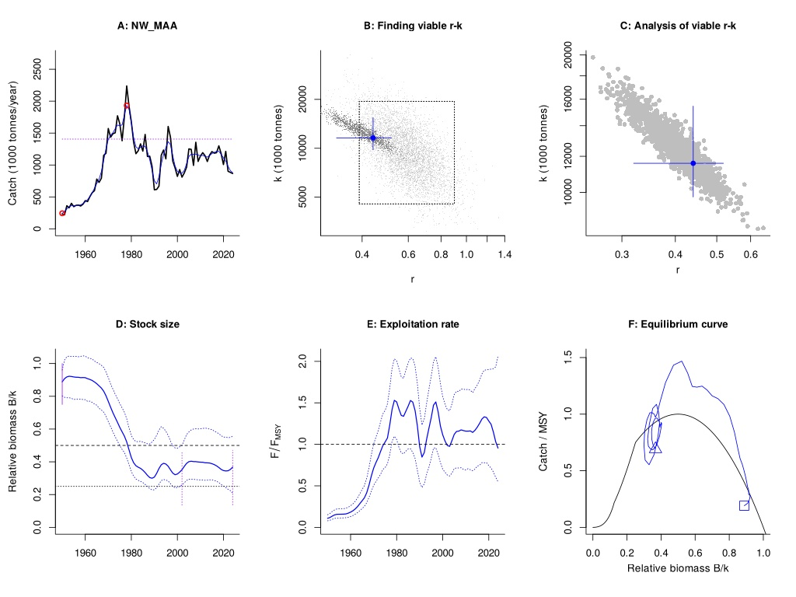
真鰺紅→黃臺灣占 6%
- FAO 項目
- Japanese jack mackerel
- 主要通報國（全期占比）
- 日本 85%、韓國 8%、中國大陸 6%、臺灣 1%
- 臺灣占比
- 全期 1%；2015–2024 6%
- 臺灣評估
- 年報（沿岸＋近海），1989–2025
| 只用臺灣資料 | 西北太平洋合計 | |
|---|---|---|
| 期間 | 1989–2025 | 1950–2024 |
| B/Bmsy（95%） | 0.66（0.36–1.02） | 0.57（0.24–0.85） |
| F/Fmsy（95%） | 1.21（0.60–3.39） | 0.94（0.53–4.52） |
| Kobe | 紅 | 黃（紅 44%、黃 56%、綠 0%） |
| MSY（t） | 12,814 | 302,244 |
| SSP | 完全開發 | 復育中 |
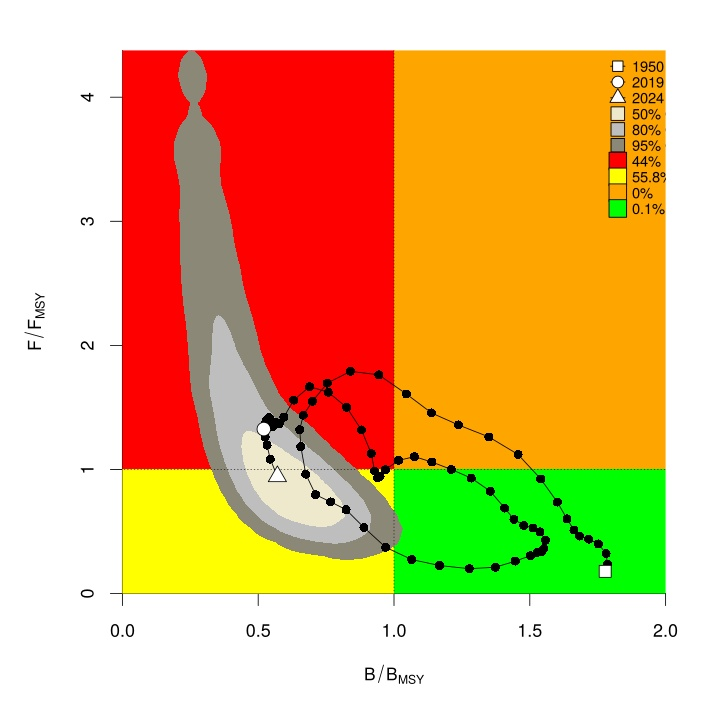
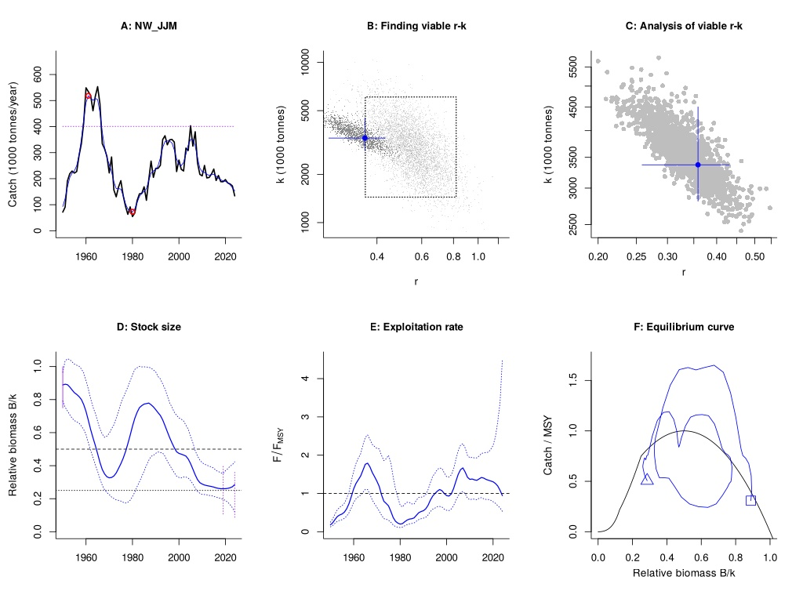
合齒魚科黃→黃臺灣占 4%
- FAO 項目
- Greater lizardfish；Lizardfishes NEI；Brushtooth lizardfish
- 主要通報國（全期占比）
- 日本 46%、臺灣 32%、香港 22%、韓國 1%
- 臺灣占比
- 全期 30%；2015–2024 4%
- 臺灣評估
- 年報（沿岸＋近海），1950–2025
| 只用臺灣資料 | 西北太平洋合計 | |
|---|---|---|
| 期間 | 1950–2025 | 1950–2024 |
| B/Bmsy（95%） | 0.20（0.07–0.45） | 0.30（0.14–0.58） |
| F/Fmsy（95%） | 0.51（0.10–4.80） | 0.91（0.27–4.41） |
| Kobe | 黃 | 黃（紅 45%、黃 55%、綠 0%） |
| MSY（t） | 5,724 | 42,571 |
| SSP | 崩潰 | 崩潰 |
通報斷層處理：日本在 2006 年後停止分種通報，以其未分類項目的 2.2% 補足。
合齒魚科所有項目。
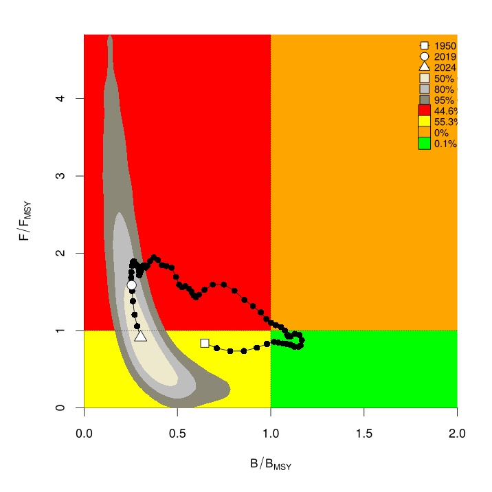
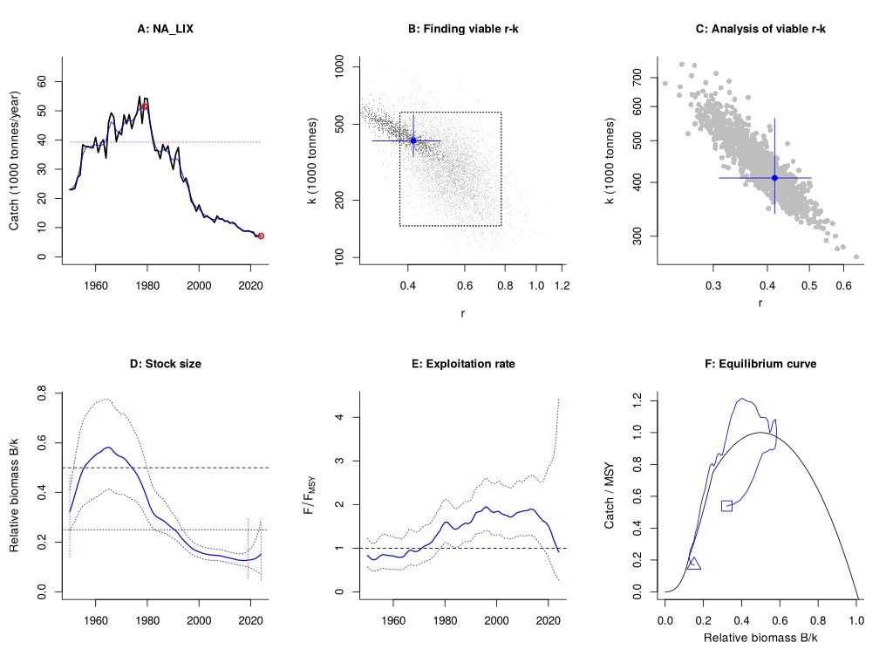
飛魚科黃→黃臺灣占 3%
- FAO 項目
- Flyingfishes NEI；Japanese flyingfish
- 主要通報國（全期占比）
- 日本 84%、臺灣 16%
- 臺灣占比
- 全期 14%；2015–2024 3%
- 臺灣評估
- FAO 臺灣（含遠洋拖網），1950–2024
| 只用臺灣資料 | 西北太平洋合計 | |
|---|---|---|
| 期間 | 1950–2024 | 1950–2024 |
| B/Bmsy（95%） | 0.22（0.07–0.47） | 0.61（0.28–1.03） |
| F/Fmsy（95%） | 0.99（0.21–11.90） | 0.70（0.36–2.84） |
| Kobe | 黃 | 黃（紅 23%、黃 74%、綠 3%） |
| MSY（t） | 3,560 | 14,233 |
| SSP | 崩潰 | 崩潰 |
通報斷層處理：日本在 2006 年後停止分種通報，以其未分類項目的 3.4% 補足。
飛魚科所有項目。
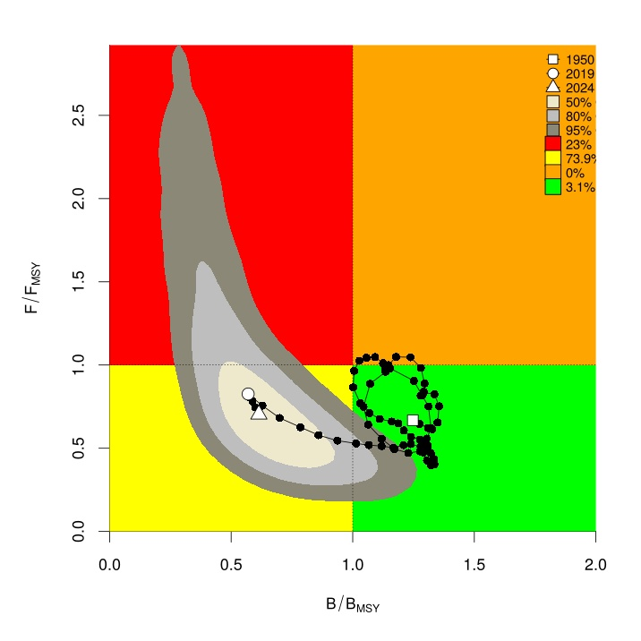
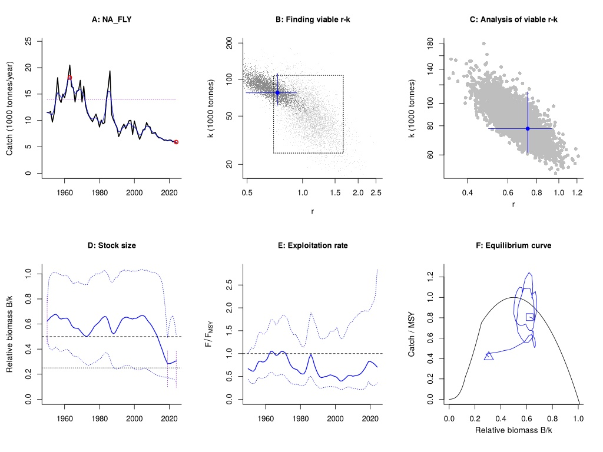
長足龍蝦紅→紅臺灣占 1%
- FAO 項目
- Longlegged spiny lobster
- 主要通報國（全期占比）
- 日本 80%、韓國 15%、臺灣 5%
- 臺灣占比
- 全期 5%；2015–2024 1%
- 臺灣評估
- FAO 臺灣（含遠洋拖網），1952–2024
| 只用臺灣資料 | 西北太平洋合計 | |
|---|---|---|
| 期間 | 1952–2024 | 1950–2024 |
| B/Bmsy（95%） | 0.25（0.07–0.50） | 0.63（0.36–0.94） |
| F/Fmsy（95%） | 2.22（0.52–24.72） | 2.39（1.27–6.67） |
| Kobe | 紅 | 紅（紅 99%、黃 0%、綠 0%） |
| MSY（t） | 129 | 1,866 |
| SSP | 復育中 | 完全開發 |
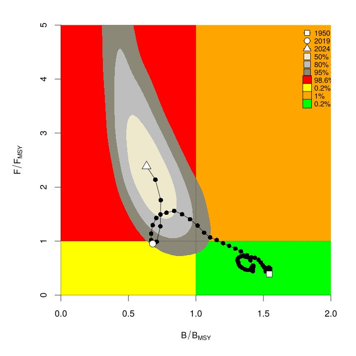
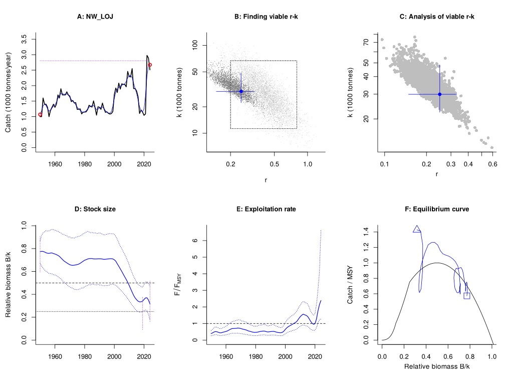
鯔紅→黃臺灣占 1%
- FAO 項目
- Flathead grey mullet
- 主要通報國（全期占比）
- 中國大陸 76%、日本 11%、韓國 9%、臺灣 4%
- 臺灣占比
- 全期 3%；2015–2024 1%
- 臺灣評估
- 年報（沿岸＋近海），1950–2025
| 只用臺灣資料 | 西北太平洋合計 | |
|---|---|---|
| 期間 | 1950–2025 | 1950–2024 |
| B/Bmsy（95%） | 0.29（0.10–0.57） | 0.84（0.48–1.21） |
| F/Fmsy（95%） | 1.80（0.49–13.71） | 0.90（0.51–1.79） |
| Kobe | 紅 | 黃（紅 37%、黃 40%、綠 23%） |
| MSY（t） | 2,683 | 101,970 |
| SSP | 復育中 | 完全開發 |
通報斷層處理：中國大陸在 1995 年以前未分種通報，以其未分類項目的 1.5% 回推。
敏感度：只用 1995–2024 年（通報後）的資料，B/Bmsy 0.79、F/Fmsy 0.88，黃區，與補足後的分區相同。
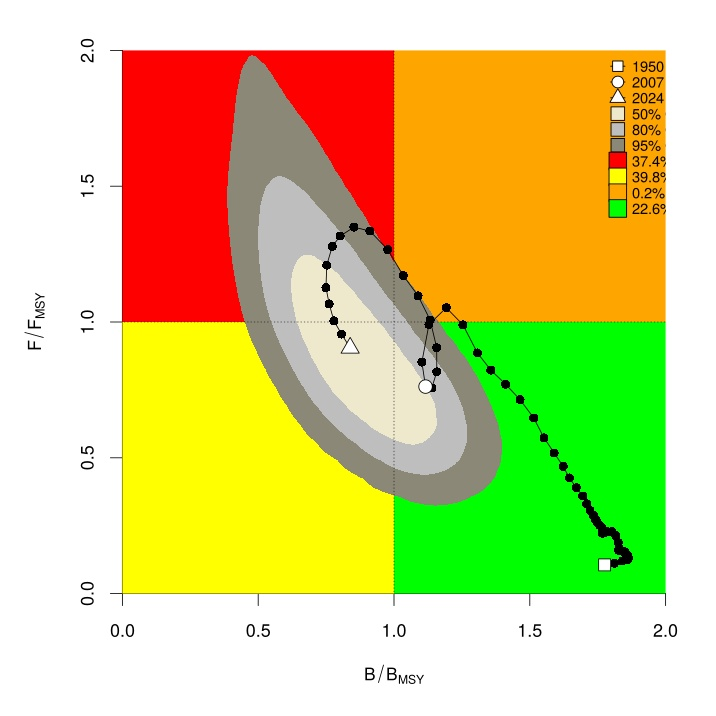
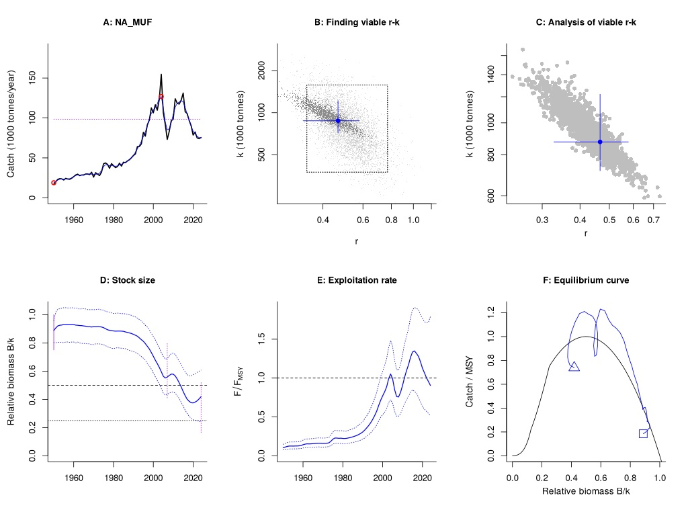
帶魚屬紅→綠臺灣占 1%
- FAO 項目
- Largehead hairtail
- 主要通報國（全期占比）
- 中國大陸 86%、韓國 9%、日本 3%、臺灣 2%
- 臺灣占比
- 全期 2%；2015–2024 1%
- 臺灣評估
- 年報（沿岸＋近海），1950–2025
| 只用臺灣資料 | 西北太平洋合計 | |
|---|---|---|
| 期間 | 1950–2025 | 1950–2024 |
| B/Bmsy（95%） | 0.60（0.32–0.94） | 1.02（0.69–1.35） |
| F/Fmsy（95%） | 1.93（0.95–6.40） | 0.88（0.51–1.54） |
| Kobe | 紅 | 綠（紅 27%、黃 19%、綠 49%） |
| MSY（t） | 10,406 | 1,138,782 |
| SSP | 完全開發 | 完全開發 |
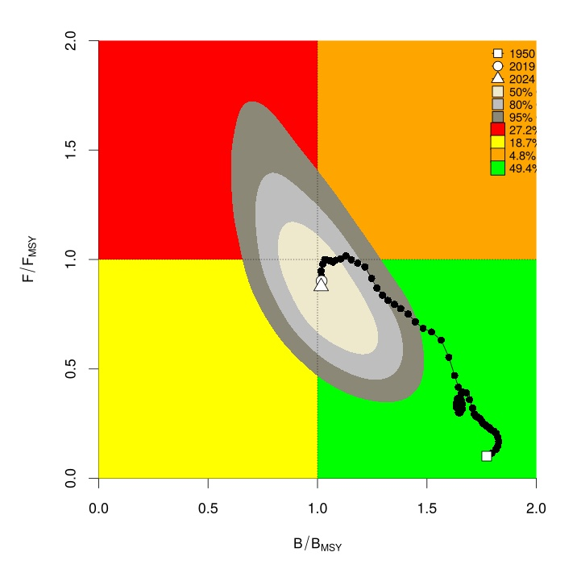
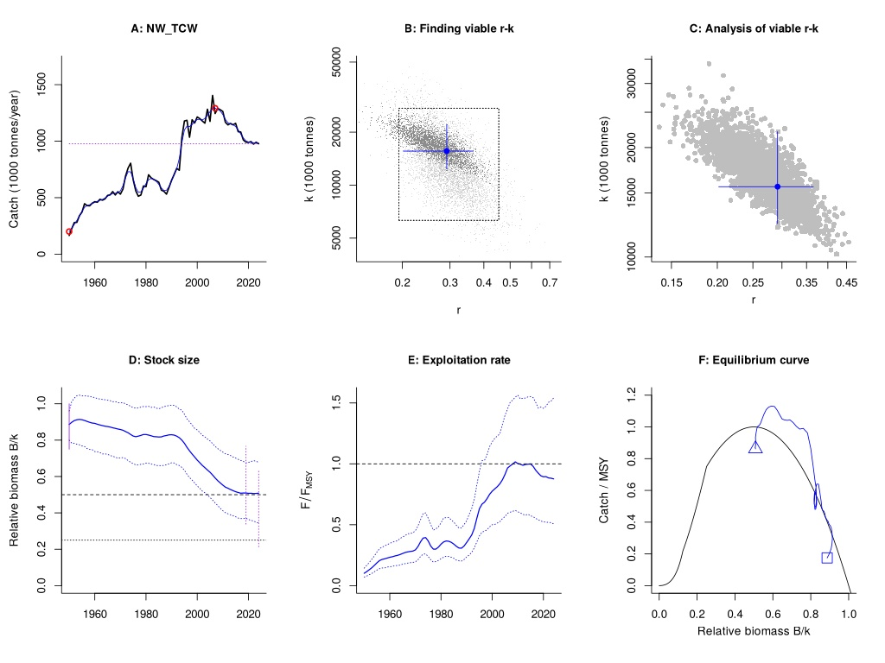
真鯛黃→黃臺灣占 1%
- FAO 項目
- Silver seabream
- 主要通報國（全期占比）
- 日本 87%、臺灣 8%、韓國 5%
- 臺灣占比
- 全期 8%；2015–2024 1%
- 臺灣評估
- 年報（沿岸＋近海），1950–2025
| 只用臺灣資料 | 西北太平洋合計 | |
|---|---|---|
| 期間 | 1950–2025 | 1950–2024 |
| B/Bmsy（95%） | 0.20（0.08–0.41） | 0.72（0.43–1.06） |
| F/Fmsy（95%） | 0.52（0.11–3.23） | 1.00（0.55–2.15） |
| Kobe | 黃 | 黃（紅 50%、黃 45%、綠 6%） |
| MSY（t） | 2,389 | 21,756 |
| SSP | 崩潰 | 完全開發 |
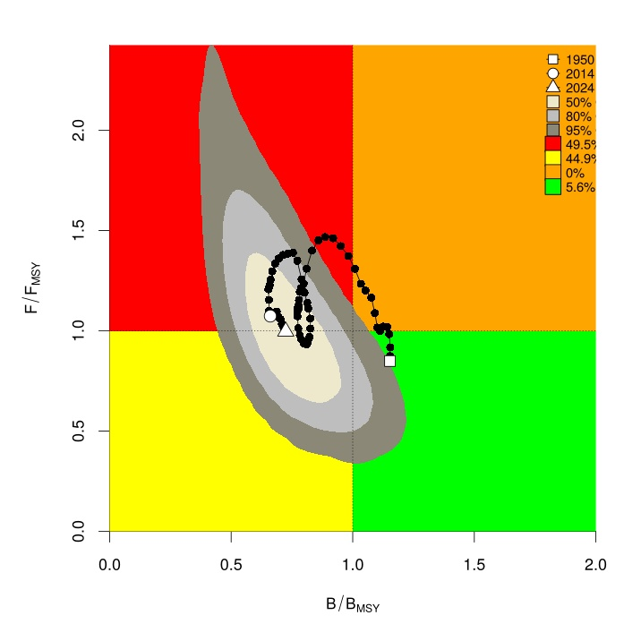
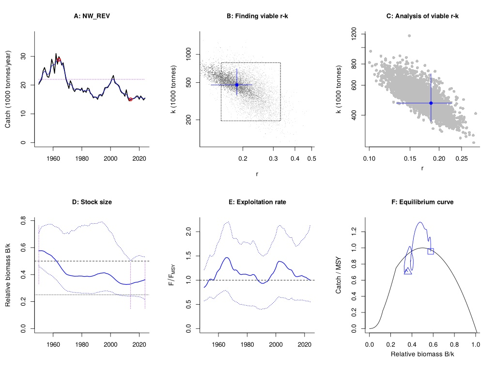
白姑魚紅→綠臺灣占 1%
- FAO 項目
- Silver croaker
- 主要通報國（全期占比）
- 中國大陸 83%、臺灣 17%
- 臺灣占比
- 全期 9%；2015–2024 1%
- 臺灣評估
- 年報（沿岸＋近海），1954–2025
| 只用臺灣資料 | 西北太平洋合計 | |
|---|---|---|
| 期間 | 1954–2025 | 1950–2024 |
| B/Bmsy（95%） | 0.24（0.09–0.49） | 1.15（0.78–1.43） |
| F/Fmsy（95%） | 1.02（0.25–7.63） | 0.72（0.46–1.25） |
| Kobe | 紅 | 綠（紅 8%、黃 10%、綠 79%） |
| MSY（t） | 4,529 | 118,387 |
| SSP | 崩潰 | 完全開發 |
通報斷層處理：中國大陸在 2003 年以前未分種通報，以其未分類項目的 2.6% 回推。
敏感度：只用 2003–2024 年（通報後）的資料，B/Bmsy 1.15、F/Fmsy 0.71，綠區，與補足後的分區相同。
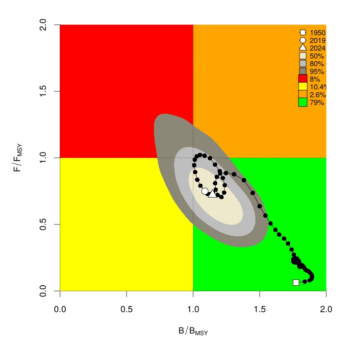
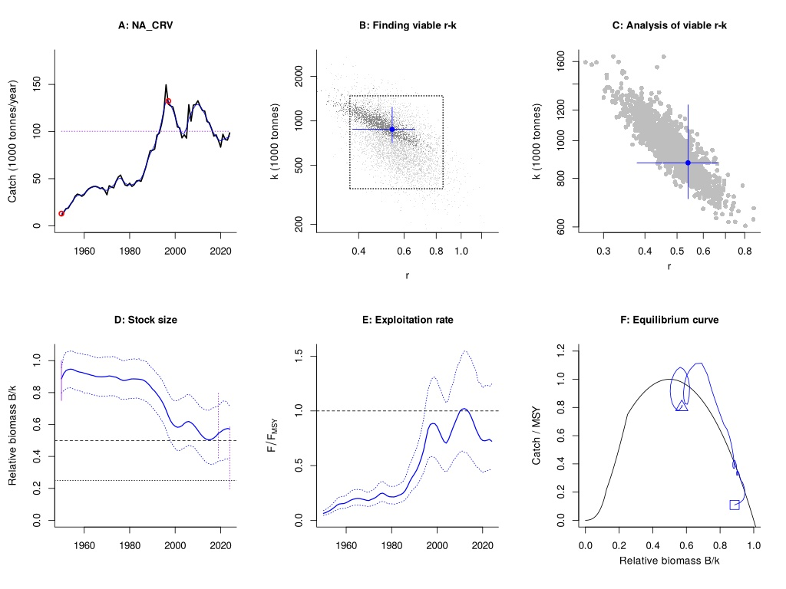
遠海梭子蟹黃→綠臺灣占 1%
- FAO 項目
- Blue swimming crab
- 主要通報國（全期占比）
- 中國大陸 95%、臺灣 5%
- 臺灣占比
- 全期 5%；2015–2024 1%
- 臺灣評估
- 年報（沿岸＋近海），1968–2025
| 只用臺灣資料 | 西北太平洋合計 | |
|---|---|---|
| 期間 | 1968–2025 | 1950–2024 |
| B/Bmsy（95%） | 0.20（0.07–0.43） | 1.06（0.63–1.41） |
| F/Fmsy（95%） | 0.25（0.05–2.34） | 0.83（0.49–1.56） |
| Kobe | 黃 | 綠（紅 23%、黃 17%、綠 57%） |
| MSY（t） | 4,619 | 82,417 |
| SSP | 崩潰 | 完全開發 |
通報斷層處理：中國大陸在 1990 年以前未分種通報，以其未分類項目的 3.2% 回推。
敏感度：只用 1990–2024 年（通報後）的資料，B/Bmsy 1.00、F/Fmsy 0.86，黃區，與補足後的分區不同，結果對處理方式敏感。
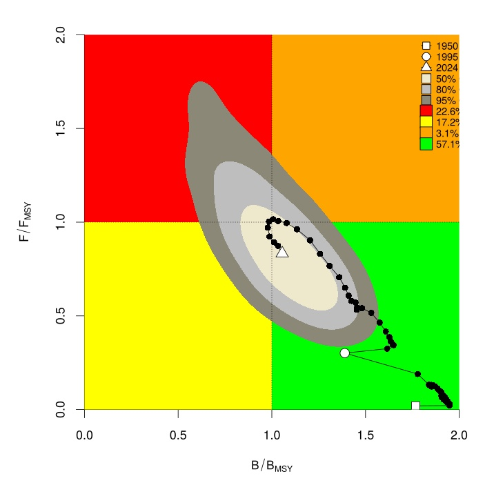
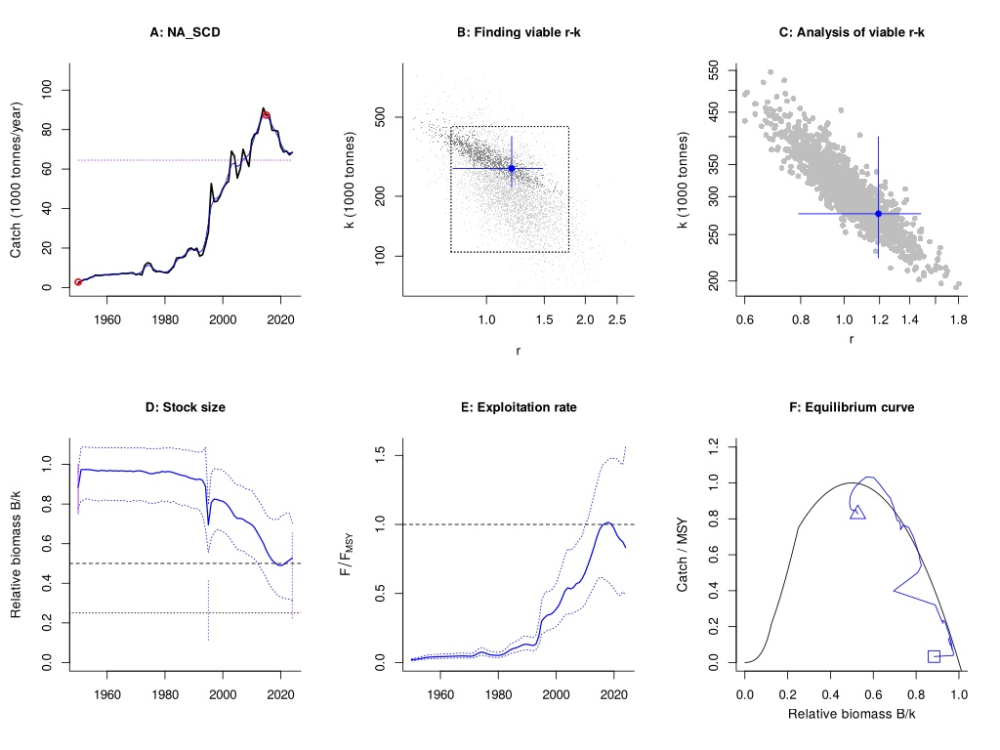
日本馬加鰆黃→紅臺灣占 1%
- FAO 項目
- Japanese Spanish mackerel
- 主要通報國（全期占比）
- 韓國 55%、日本 25%、臺灣 19%
- 臺灣占比
- 全期 19%；2015–2024 1%
- 臺灣評估
- 年報（沿岸＋近海），1989–2025
| 只用臺灣資料 | 西北太平洋合計 | |
|---|---|---|
| 期間 | 1989–2025 | 1950–2024 |
| B/Bmsy（95%） | 0.57（0.21–0.90） | 0.86（0.52–1.25） |
| F/Fmsy（95%） | 0.86（0.46–5.53） | 1.24（0.69–2.34） |
| Kobe | 黃 | 紅（紅 68%、黃 7%、綠 17%） |
| MSY（t） | 525 | 49,262 |
| SSP | 復育中 | 完全開發 |
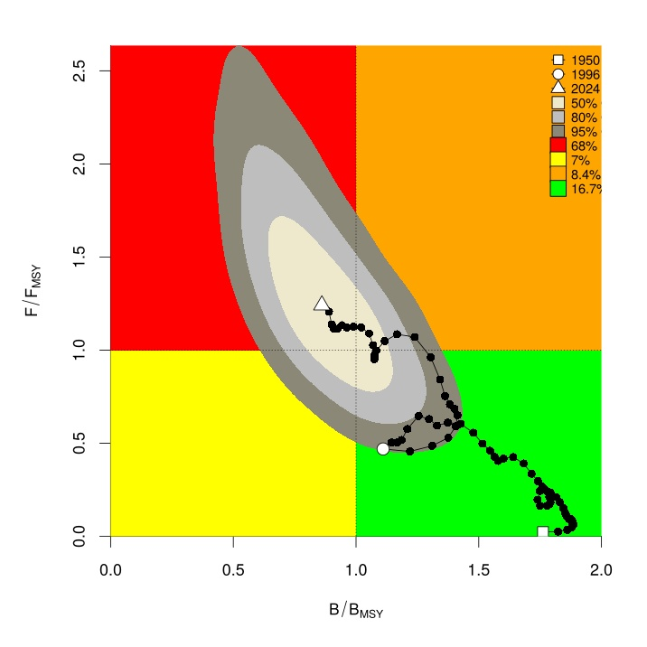
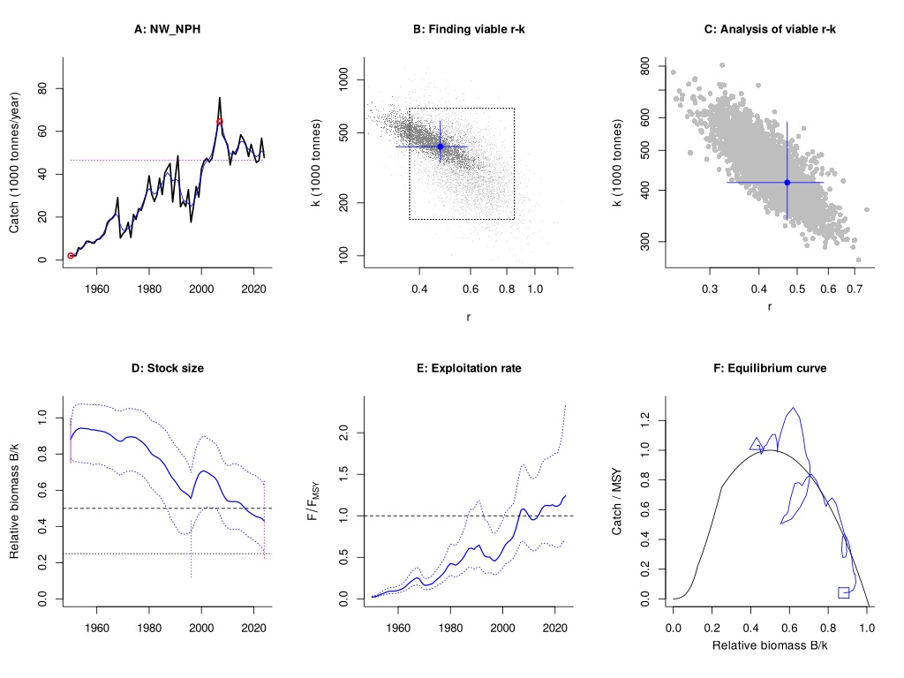
臭肉鰮黃→紅臺灣占 <1%
- FAO 項目
- Red-eye round herring
- 主要通報國（全期占比）
- 日本 91%、臺灣 9%
- 臺灣占比
- 全期 9%；2015–2024 <1%
- 臺灣評估
- FAO 臺灣（含遠洋拖網），1950–2024
| 只用臺灣資料 | 西北太平洋合計 | |
|---|---|---|
| 期間 | 1950–2024 | 1950–2024 |
| B/Bmsy（95%） | 0.19（0.06–0.39） | 0.92（0.57–1.28） |
| F/Fmsy（95%） | 0.05（0.01–0.50） | 1.14（0.66–2.05） |
| Kobe | 黃 | 紅（紅 58%、黃 9%、綠 23%） |
| MSY（t） | 11,852 | 74,758 |
| SSP | 崩潰 | 完全開發 |
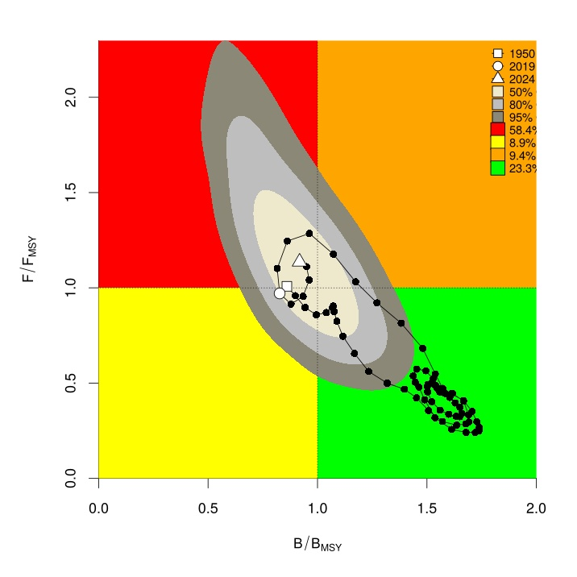
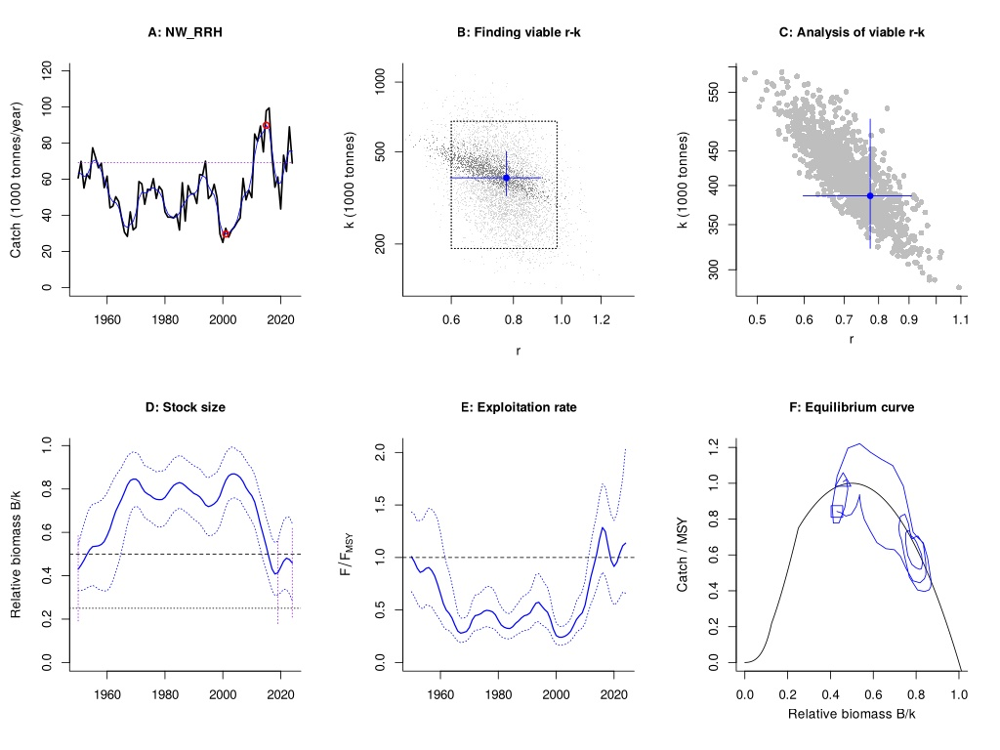
烏賊、耳烏賊類黃→綠臺灣占 <1%
- FAO 項目
- Cuttlefish, bobtail squids NEI
- 主要通報國（全期占比）
- 中國大陸 76%、日本 9%、韓國 8%、臺灣 7%
- 臺灣占比
- 全期 7%；2015–2024 <1%
- 臺灣評估
- FAO 臺灣（含遠洋拖網），1950–2024
| 只用臺灣資料 | 西北太平洋合計 | |
|---|---|---|
| 期間 | 1950–2024 | 1950–2024 |
| B/Bmsy（95%） | 0.19（0.07–0.36） | 1.21（0.78–1.47） |
| F/Fmsy（95%） | 0.33（0.08–2.41） | 0.62（0.39–1.20） |
| Kobe | 黃 | 綠（紅 6%、黃 8%、綠 85%） |
| MSY（t） | 21,280 | 194,236 |
| SSP | 崩潰 | 完全開發 |
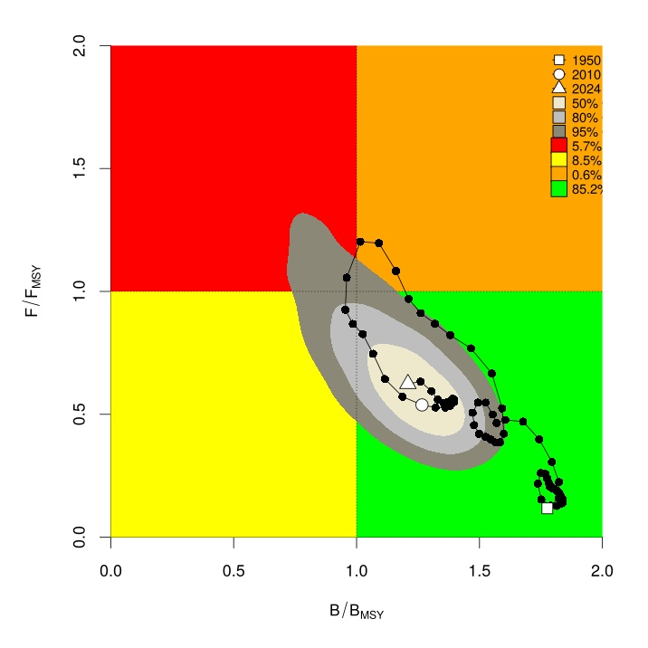
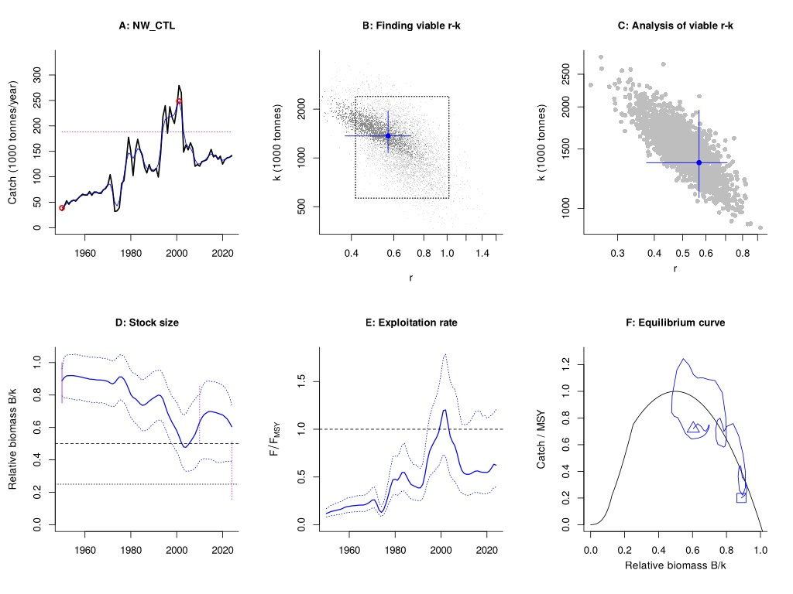
鮃鰈類黃→紅臺灣占 <1%
- FAO 項目
- Flatfishes NEI
- 主要通報國（全期占比）
- 日本 62%、前蘇聯 20%、俄羅斯 17%、北韓 1%
- 臺灣占比
- 全期 <1%；2015–2024 <1%
- 臺灣評估
- FAO 臺灣（含遠洋拖網），1950–2024
| 只用臺灣資料 | 西北太平洋合計 | |
|---|---|---|
| 期間 | 1950–2024 | 1950–2024 |
| B/Bmsy（95%） | 0.23（0.08–0.47） | 0.39（0.16–0.71） |
| F/Fmsy（95%） | 0.85（0.21–8.63） | 1.27（0.49–7.39） |
| Kobe | 黃 | 紅（紅 63%、黃 37%、綠 0%） |
| MSY（t） | 1,957 | 295,924 |
| SSP | 崩潰 | 過度開發 |
只含「鮃鰈類 NEI」；日韓俄另以種別通報的鰈類未納入。
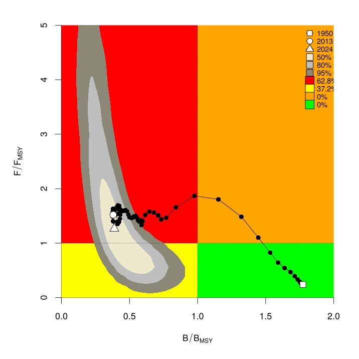
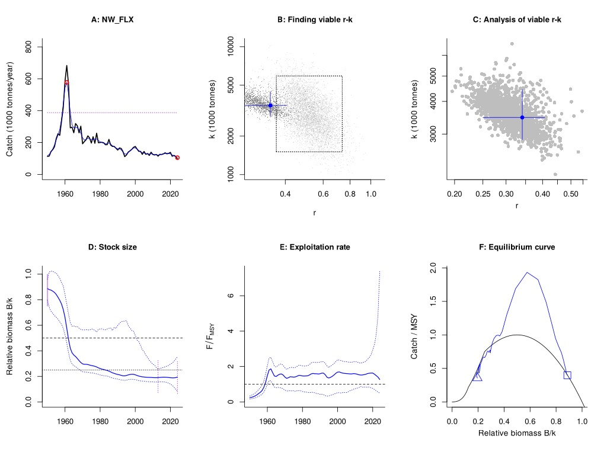
馬頭魚屬紅→紅臺灣占 <1%
- FAO 項目
- Deep water tilefishes NEI
- 主要通報國（全期占比）
- 中國大陸 76%、香港 14%、日本 4%、臺灣 3%
- 臺灣占比
- 全期 1%；2015–2024 <1%
- 臺灣評估
- FAO 臺灣（含遠洋拖網），1958–2024
| 只用臺灣資料 | 西北太平洋合計 | |
|---|---|---|
| 期間 | 1958–2024 | 1950–2024 |
| B/Bmsy（95%） | 0.22（0.07–0.47） | 0.74（0.46–1.09） |
| F/Fmsy（95%） | 1.00（0.21–9.11） | 1.03（0.61–1.97） |
| Kobe | 紅 | 紅（紅 54%、黃 39%、綠 7%） |
| MSY（t） | 849 | 57,834 |
| SSP | 崩潰 | 完全開發 |
通報斷層處理：中國大陸在 2003 年以前未分種通報，以其未分類項目的 1.6% 回推。
敏感度：只用 2003–2024 年（通報後）的資料，B/Bmsy 0.93、F/Fmsy 0.90，黃區，與補足後的分區不同，結果對處理方式敏感。
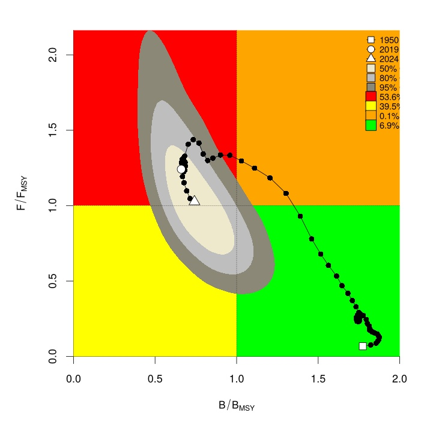
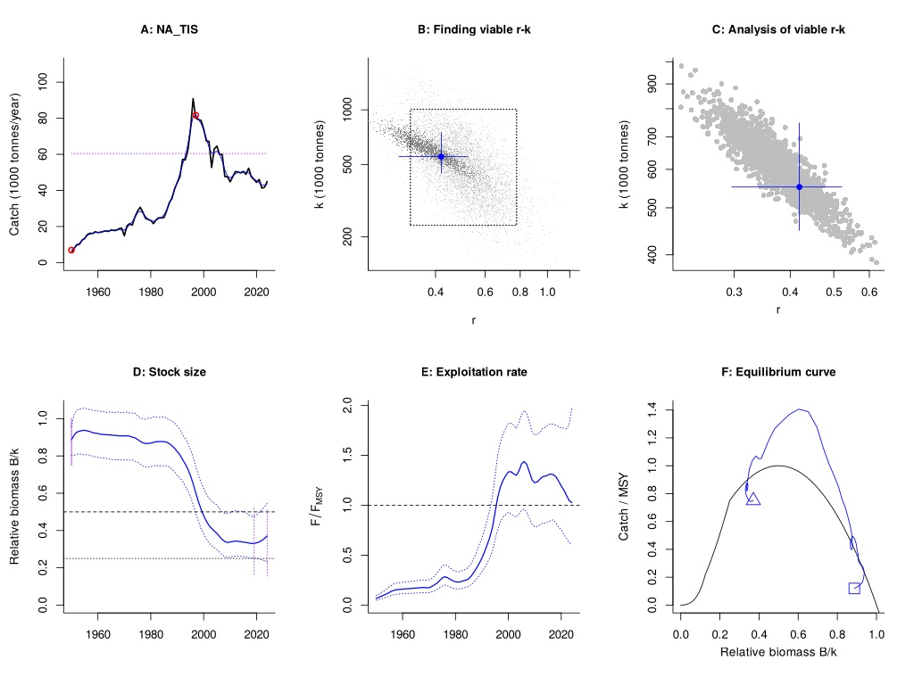
灰海鰻黃→紅臺灣占 <1%
- FAO 項目
- Daggertooth pike conger；Pike-congers NEI
- 主要通報國（全期占比）
- 中國大陸 84%、日本 8%、臺灣 3%、香港 2%
- 臺灣占比
- 全期 3%；2015–2024 <1%
- 臺灣評估
- FAO 臺灣（含遠洋拖網），1950–2024
| 只用臺灣資料 | 西北太平洋合計 | |
|---|---|---|
| 期間 | 1950–2024 | 1950–2024 |
| B/Bmsy（95%） | 0.20（0.07–0.42） | 0.95（0.54–1.35） |
| F/Fmsy（95%） | 0.89（0.18–7.51） | 1.10（0.59–2.18） |
| Kobe | 黃 | 紅（紅 51%、黃 9%、綠 30%） |
| MSY（t） | 7,707 | 328,063 |
| SSP | 崩潰 | 完全開發 |
通報斷層處理：中國大陸在 1990 年以前未分種通報，以其未分類項目的 0.7% 回推。
敏感度：只用 1990–2024 年（通報後）的資料，B/Bmsy 1.03、F/Fmsy 0.95，綠區，與補足後的分區不同，結果對處理方式敏感。
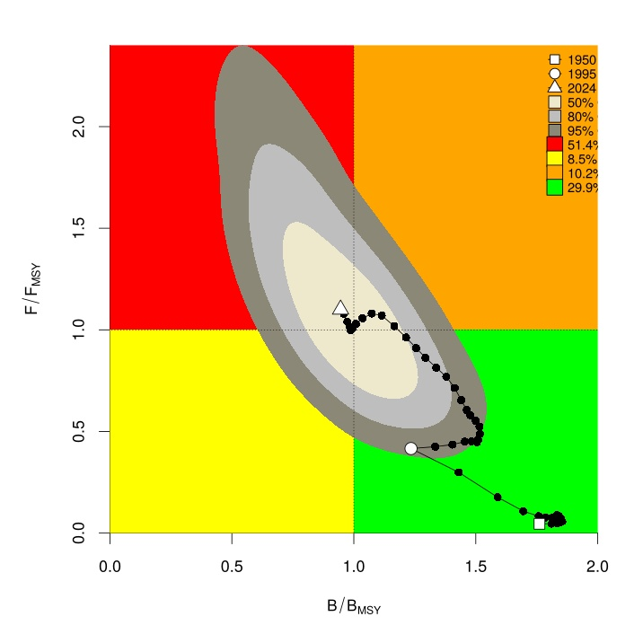
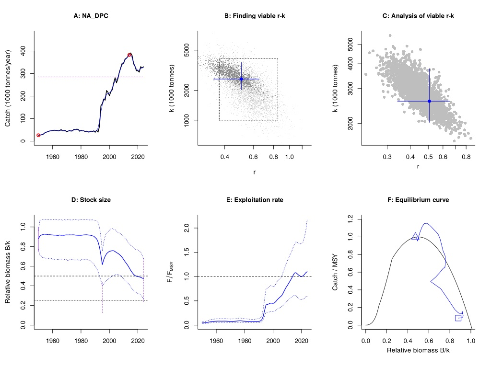
單棘魨科黃→紅臺灣占 <1%
- FAO 項目
- Filefishes NEI；Threadsail filefish
- 主要通報國（全期占比）
- 中國大陸 75%、韓國 25%
- 臺灣占比
- 全期 <1%；2015–2024 <1%
- 臺灣評估
- 年報（沿岸＋近海），1989–2025
| 只用臺灣資料 | 西北太平洋合計 | |
|---|---|---|
| 期間 | 1989–2025 | 1972–2024 |
| B/Bmsy（95%） | 0.19（0.05–0.41） | 0.36（0.15–0.67） |
| F/Fmsy（95%） | 0.64（0.14–10.47） | 1.41（0.48–8.00） |
| Kobe | 黃 | 紅（紅 67%、黃 33%、綠 0%） |
| MSY（t） | 1,578 | 345,607 |
| SSP | 崩潰 | 過度開發 |
單棘魨科所有項目。
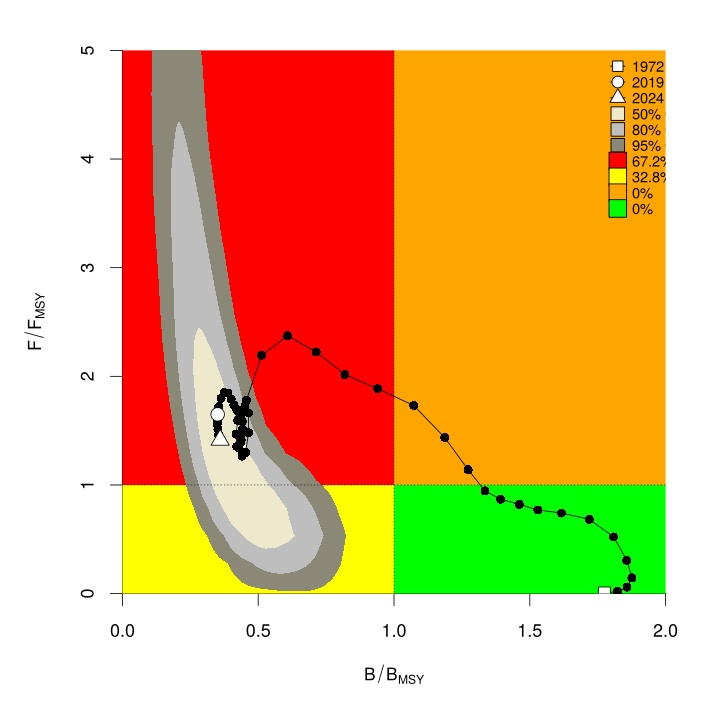
章魚類紅→綠臺灣占 <1%
- FAO 項目
- Octopuses, etc. NEI
- 主要通報國（全期占比）
- 日本 47%、中國大陸 39%、韓國 13%、臺灣 1%
- 臺灣占比
- 全期 <1%；2015–2024 <1%
- 臺灣評估
- FAO 臺灣（含遠洋拖網），1958–2024
| 只用臺灣資料 | 西北太平洋合計 | |
|---|---|---|
| 期間 | 1958–2024 | 1950–2024 |
| B/Bmsy（95%） | 0.19（0.06–0.41） | 1.20（0.81–1.47） |
| F/Fmsy（95%） | 1.09（0.22–10.84） | 0.65（0.42–1.10） |
| Kobe | 紅 | 綠（紅 4%、黃 11%、綠 84%） |
| MSY（t） | 1,377 | 210,191 |
| SSP | 崩潰 | 完全開發 |
通報斷層處理：中國大陸在 2003 年以前未分種通報，以其未分類項目的 12.2% 回推。
敏感度：只用 2003–2024 年（通報後）的資料，B/Bmsy 1.40、F/Fmsy 0.54，綠區，與補足後的分區相同。
鐮鯧黃→綠臺灣占 <1%
- FAO 項目
- Silver pomfret；Silver pomfrets NEI
- 主要通報國（全期占比）
- 中國大陸 98%、韓國 2%、臺灣 1%
- 臺灣占比
- 全期 1%；2015–2024 <1%
- 臺灣評估
- 年報（沿岸＋近海），1966–2025
| 只用臺灣資料 | 西北太平洋合計 | |
|---|---|---|
| 期間 | 1966–2025 | 1950–2024 |
| B/Bmsy（95%） | 0.19（0.07–0.43） | 1.12（0.70–1.44） |
| F/Fmsy（95%） | 0.49（0.09–3.57） | 0.86（0.52–1.61） |
| Kobe | 黃 | 綠（紅 21%、黃 6%、綠 63%） |
| MSY（t） | 3,773 | 361,351 |
| SSP | 崩潰 | 完全開發 |
通報斷層處理：中國大陸在 1978 年以前未分種通報，以其未分類項目的 2.9% 回推。
敏感度：只用 1978–2024 年（通報後）的資料，B/Bmsy 1.06、F/Fmsy 0.94，綠區，與補足後的分區相同。
含中國大陸通報的鯧屬合計。
小黃魚紅→黃臺灣占 <1%
- FAO 項目
- Yellow croaker
- 主要通報國（全期占比）
- 中國大陸 74%、韓國 16%、日本 10%、臺灣 1%
- 臺灣占比
- 全期 1%；2015–2024 <1%
- 臺灣評估
- FAO 臺灣（含遠洋拖網），1950–2024
| 只用臺灣資料 | 西北太平洋合計 | |
|---|---|---|
| 期間 | 1950–2024 | 1950–2024 |
| B/Bmsy（95%） | 0.18（0.05–0.43） | 0.98（0.51–1.33） |
| F/Fmsy（95%） | 1.19（0.20–13.30） | 0.82（0.49–1.80） |
| Kobe | 紅 | 黃（紅 27%、黃 27%、綠 46%） |
| MSY（t） | 2,233 | 358,578 |
| SSP | 崩潰 | 完全開發 |
劍蝦紅→黃臺灣占 <1%
- FAO 項目
- Southern rough shrimp
- 主要通報國（全期占比）
- 中國大陸 98%、臺灣 2%、韓國 1%
- 臺灣占比
- 全期 2%；2015–2024 <1%
- 臺灣評估
- 年報（沿岸＋近海），1989–2025
| 只用臺灣資料 | 西北太平洋合計 | |
|---|---|---|
| 期間 | 1989–2025 | 1950–2024 |
| B/Bmsy（95%） | 0.26（0.08–0.53） | 0.94（0.56–1.32） |
| F/Fmsy（95%） | 1.07（0.27–10.46） | 0.91（0.55–1.65） |
| Kobe | 紅 | 黃（紅 36%、黃 25%、綠 37%） |
| MSY（t） | 907 | 298,209 |
| SSP | 過度開發 | 完全開發 |
通報斷層處理：中國大陸在 1978 年以前未分種通報，以其未分類項目的 4.9% 回推。
敏感度：只用 1978–2024 年（通報後）的資料，B/Bmsy 0.86、F/Fmsy 1.00，黃區，與補足後的分區相同。
資料與方法
- 資料：FAO FishStat 61 區（西北太平洋）各國漁獲，1950–2024，單位公噸。每個物種選用與臺灣評估相同的 FAO 項目；科、屬層級的單位納入該分類群所有項目。
- CMSY++：與網站相同的 CMSY++16.R 與 r 先驗；1960 年前開始且早期漁獲低於最大值 33% 者，起始 B/k 設 0.75–1.0。
- 通報斷層補足：占區域漁獲 30% 以上的國家若晚於序列起點 5 年以上才分種通報，斷層前的漁獲以該國未分類項目（魚類 NEI、甲殼類 NEI 或軟體動物 NEI）乘上通報初期 3 年的平均比例回推；若中途停止分種通報，則以停止前 3 年的比例補足之後年份。比例固定是一個簡化假設。
- 未評估：只有臺灣向 FAO 通報、區域合計即等於臺灣者：日本銀帶鯡、大棘大眼鯛、多毛對蝦、黑棘鯛、馬鮁科、金線魚、康氏馬加鰆、帶鰆科、海鱺、眼眶魚、黑口（黑喉）、扁甲鰺（鐵甲）、草蝦（野生）、海鯰科、新對蝦屬（沙蝦）。FAO 沒有對應項目者：吉打副葉鰺、管鞭蝦、蝦姑、間型毛蝦、晶瑩櫻蝦、黃背牙鯛、鯙科、點帶石斑。跨洋區的鮪旗魚類以 RFMO 評估為準，不在本頁。
- 限制：合計序列可能混合多個系群；中國大陸漁獲統計的準確度長期有爭議；不確定性大，多數 F/Fmsy 的 95% 區間跨越 1。